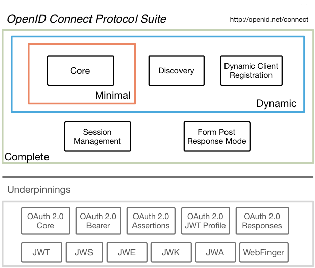
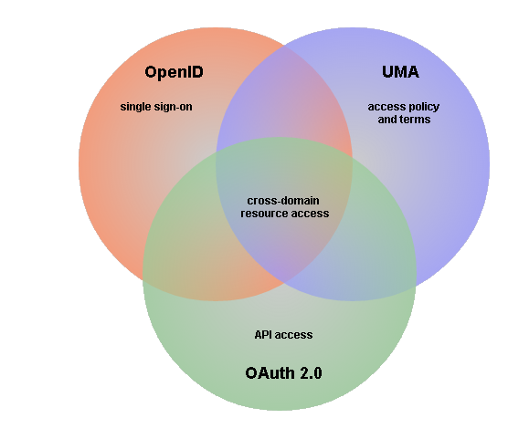

OpenID Connect Server
The LEADict's OpenID Connect authorization server (MITRE's OpenID Connect reference implemementation).
OpenID Connect is a simple identity layer on top of the OAuth 2.0 protocol, developed by the OpenID Foundation.

OpenID Connect was designed to cover B2B, as well as B2C scenarios. It combines the simplicity of OAuth 2.0 and the decentralized architecture of OpenID. It is more powerful when used in combination with User-Managed Access (UMA) standard.
UMA leverages OpenID Connect to enable safer B2B/B2C information sharing while preserving privacy. 
With a decentralized infrastructure for authentication and authorization, the internet will become safer place for information sharing and collaboration.